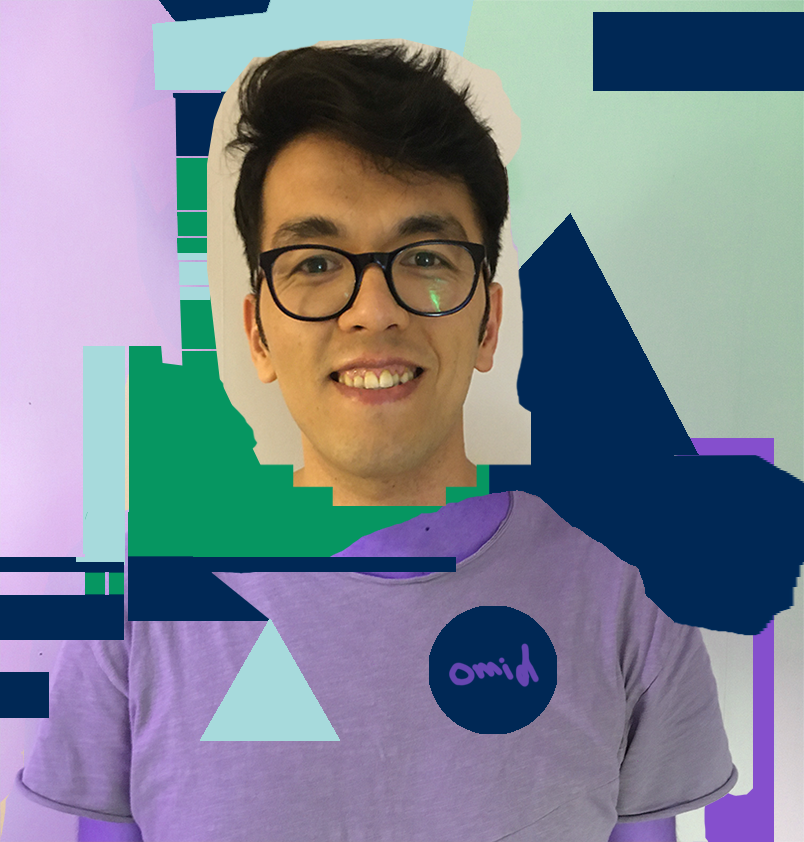

I always have hope with me ☺️
✓ Formerly a UI Designer, I have a number of years experience designing web applications and enterprise websites. I particularly kept on Adobe Photoshop before spending most of my time implementing the layouts into static webpages using HTML5 and CSS3 with a blend of jQuery.
✓ I also worked professionally as a Social Media Strategist and Online Media Specialist between 2013 to 2017 in Afghanistan as well as in Europe.
✓ I'm a student at Hyper Island studying Frontend Development Program. It's basically writing codes for the website you're looking right now. If a website looks good, that's done by someone like me. If a website looks ugly, well, yes, it's also... || nevermind! Feel like following me on Twitter? I tend to write useful stuff üòâ
✓ Also, on a quick side note: © Are you working on something interesting? ⌖ Looking for for a passionate team member? Let's talk! ☎
Even though developed in one dull, dingy autumn week in Stockholm, this website was made with LOVE. The home page is made with HTML5, CSS3, and Vanilla JavaScript. Both blogs as well as the projects page are using GatsbyJS. It uses react on top of JS, before being rendered into HTML5. With the magic of CSS3 and some sprinkling of jQuery here and there. Media queries play a pretty big role & of-course this website uses latest typography, spacing & other modern design standards.
For most of my career, I have learned thing by doing. For some reason, I can't watch a video or listen to someone else's lecture. It's boring. I can't concentrate. So I reverse engineer things. I look at other people's code, try to read and understand them, then I get my hands dirty by trying to create something similar.
It's has been an incredible journey so far. But maybe it's better if I talk less and show you what I mean.
On the page about my work you can find all my projects, from the first website I have built to the last one. Needless to mention: Pay attention to the progress I have made since September 2020.
I'm damn proud of myself, and this feels good. ☺️
üîó www.work.omidhaqbin.com ü•≥
It's a place where I try to document what I learn + I write stuff only for the sake of writing stuff.
Just so you know, I tend to keep things separate. So I won't be publishing my short stories in my blog. The blog is a place to share what I learn, and to journal my progress. I also write about other topics. Maybe you should pay my blog a visit to find out what those topics are ;-)
Ah, before I forget. As I'm bilingual, I tend to write in both Farsi and English. Separate topics. If you can't read Farsi, it's okay. You won't miss much as I probably talk about things that are more interesting for the Farsi speaking audience. But if you're curious, feel free to use this extension for FF or this one for Chrome to translate the Farsi posts.
Here is my Farsi blog: üîó www.blog.haqbin.com
Here is my English blog: üîó www.haqbin.com; unfortunately it's not as regularly updated as the Farsi one.
You can also follow my blogs via this RSS Feed
Want to discuss an idea? Have a job opportunity? Thinking about collaboration?
Or perhaps want to talk about literature ;-)?
Don't hesitate a second to reach out! I would be more than happy to hear from you! Just drop me an email!
üíå omid.haqbin@hyperisland.se
I love writing! I write in order to concentrate. It gives me comfort. It helps me to think in a more organized way.
I have been writing short stories since I was 12. More than 18 years now. Never dared to publish a book though. But instead:
1. I won the award for the best short story at Qand-e-Parsi Literature Festival in 2013 in Tehran. Qand-e-Parsi Afghanistan's biggest and most prestigious award to a writer.
2. I was recognized as the best blogger of the year in 2015 at the Third Afghan Social Media Summit in Kabul.
3. After years of absence in the field (because of immigration) in 2020, I won the award for the best short story at a contest held in memory of the victims of the war, organized by Afghanistan Human Rights and Democracy Organization.
4. I'm going to be a father. One of my plans for fatherhood is to write all the stories for my daughter myself. I'll try my best to write interesting children stories. I hope she likes them üòä